By specifying the dimensions through aes and selecting the cell population through subset, ggcyto can easily visualize the gated data stored in GatingSet.
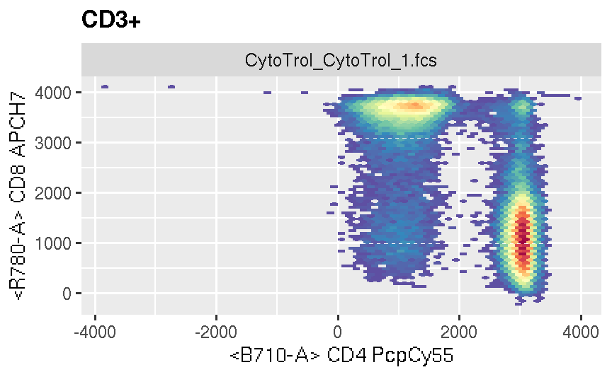
ggcyto_par_set
We can use the instrument range to automatically filter out these outlier cell events
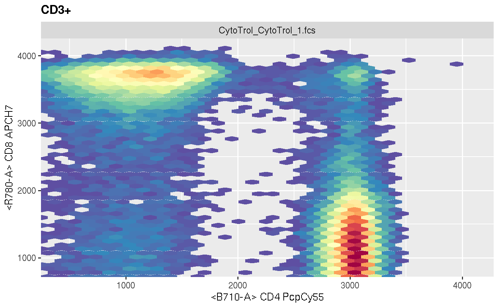
Or by setting limits manually
myPars <- ggcyto_par_set(limits = list(x = c(0,3.5e3), y = c(-10, 4.1e3)))
p <- p + myPars# or xlim(0,3.5e3) + ylim(-10, 4e3)
p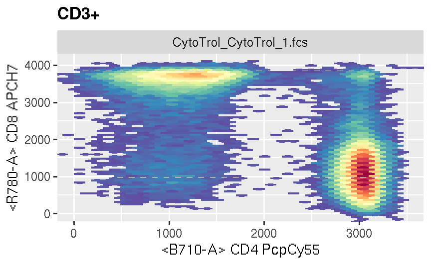
To check what kind of visualization parameters can be changed through ggcyto_par_set, simply print the default settings
## $limits
## [1] "data"
##
## $facet
## <ggproto object: Class FacetWrap, Facet, gg>
## compute_layout: function
## draw_back: function
## draw_front: function
## draw_labels: function
## draw_panels: function
## finish_data: function
## init_scales: function
## map_data: function
## params: list
## setup_data: function
## setup_params: function
## shrink: TRUE
## train_scales: function
## vars: function
## super: <ggproto object: Class FacetWrap, Facet, gg>
##
## $hex_fill
## <ScaleContinuous>
## Range:
## Limits: 0 -- 1
##
## $lab
## $labels
## [1] "both"
##
## attr(,"class")
## [1] "labs_cyto"
##
## attr(,"class")
## [1] "ggcyto_par"geom_gate
To plot a gate, simply pass the gate name to the geom_gate layer
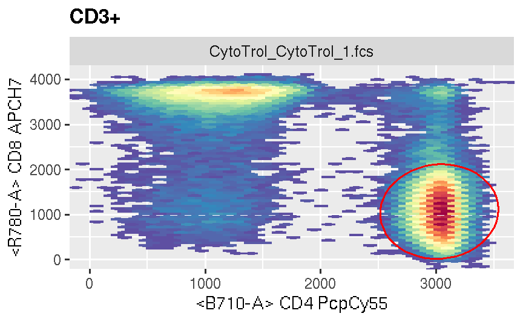
More than one gate can be added as long as they share the same parent and dimensions
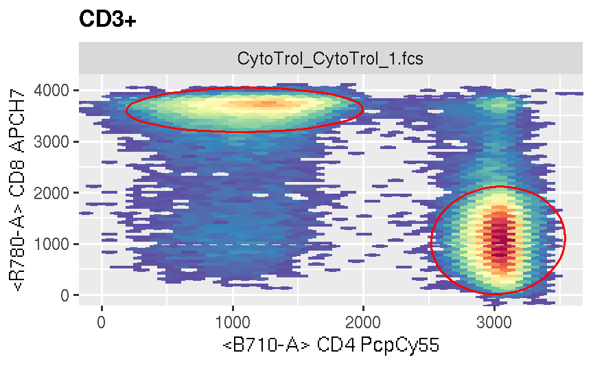 ## geom_stats By default, stats for all gate layers are added through empty geom_stats layer.
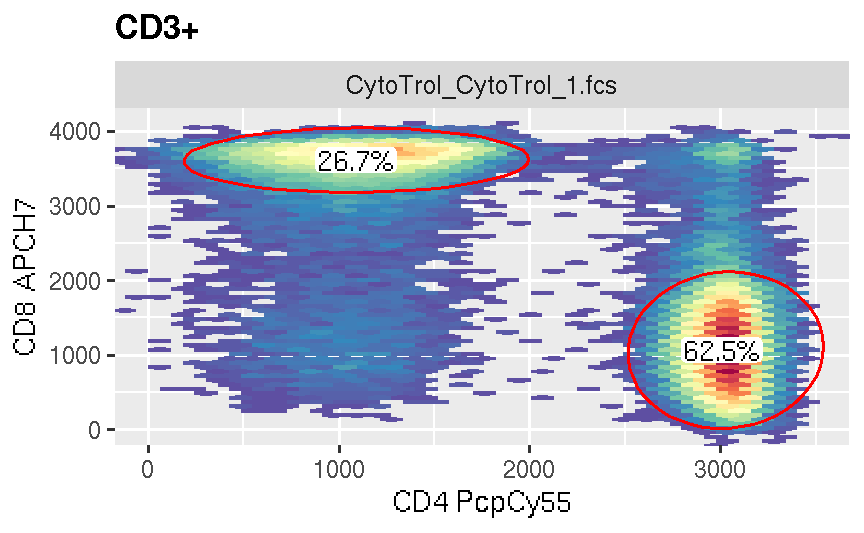
Note that we choose to only display marker on axis through labs_cyto layer here.
To add stats just for one specific gate, we can pass the gate name to geom_gate
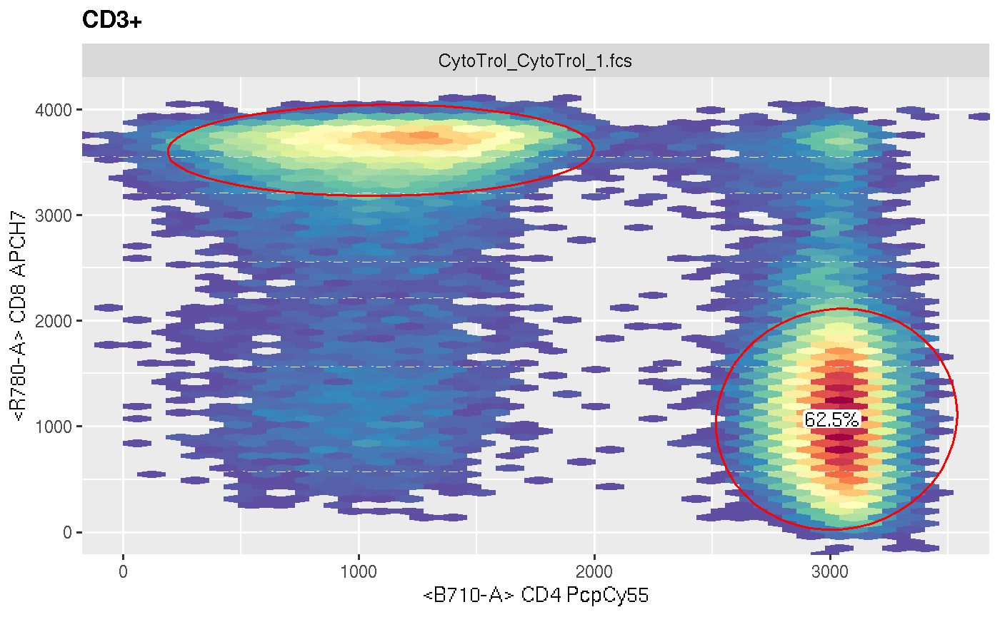
stats type, background color and position are all adjustable.
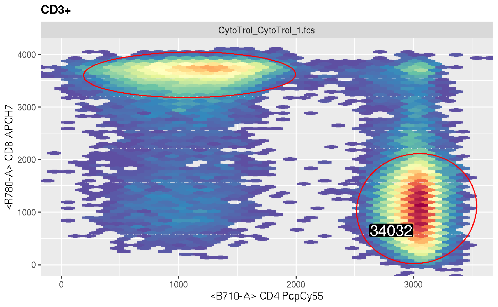
When ‘subset’ is not specified, it is at abstract status thus can not be visualized
## Error in fortify_fs.GatingSet(gs): 'subset' must be instantiated by the actual node name!
## Make sure either 'subset' is specified or the 'geom_gate' layer is added.unless it is instantiated by the gate layer, i.e. lookup the gating tree for the parent node based on the given gates in geom_gate

geom_overlay
With geom_overlay, you can easily overlay the additional cell populations (whose gates are not defined in the current projection) on top of the existing plot.
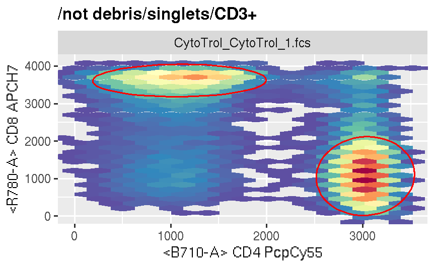
geom_overlay automatically determines the overlay type (goem_point or geom_density) based on the number of dimensions specified in ggcyto constructor. Note that we change the default y axis from density to count in order to make the scales comparable for the stacked density layers. They are wrapped with .. because they belong to the computed variables.
p <- ggcyto(gs, aes(x = CD4), subset = "CD3+") + geom_density(aes(y = ..count..))
p + geom_overlay("CD8/CCR7- 45RA+", aes(y = ..count..), fill = "red")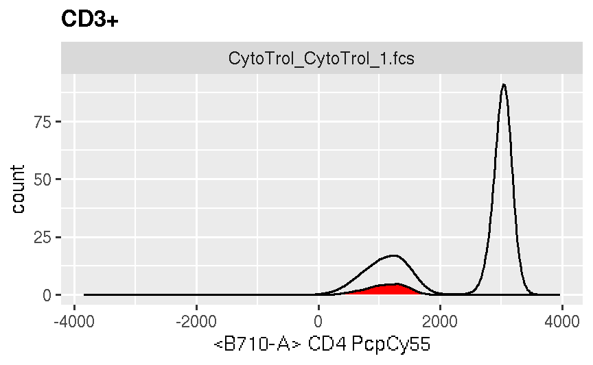
subset
Alternatively, we can choose to plot all children of one specified parent and projections
p <- ggcyto(gs, aes(x = 38, y = DR), subset = "CD4") + geom_hex(bins = 64) + geom_gate() + geom_stats()
p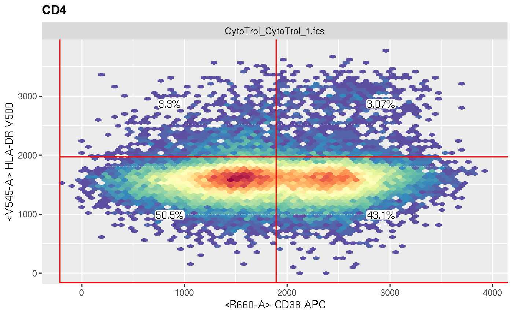
Or we can add gate layer to any arbitary node instead of its parent node
ggcyto(gs, subset = "root", aes(x = CD4, y = CD8)) + geom_hex(bins = 64) + geom_gate("CD4") + myPars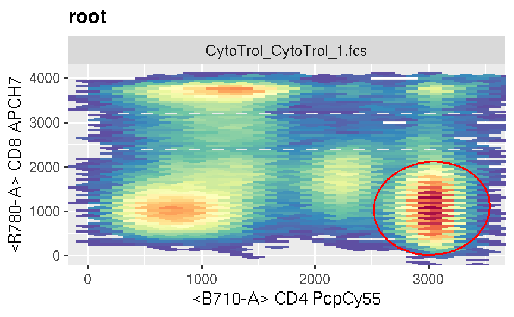